原文连接:https://www.cnblogs.com/lixinjie/p/taste-spring-009.html
上一篇文章整体非常轻松，因为在容器启动前，只注册了一个bean定义，就是SpringBoot的主类。
OK，今天接着从容器的启动入手，找出剩余所有的bean定义的注册过程。
具体细节肯定会颇为复杂，同样，大家只需关注都干了什么，不用考虑如何干的。
来宏观的看下容器的启动过程，即refresh方法，如下图01：
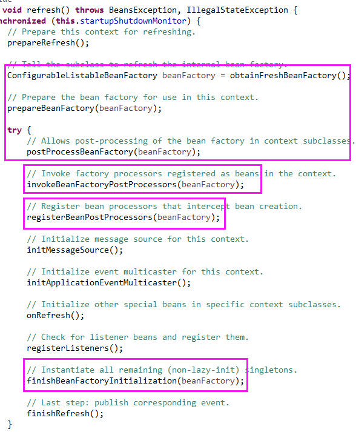
只捡重要的来说，就是四大步：
第一，准备好bean工厂（BeanFactory）。
第二，调用已经注册的bean工厂后处理器（BeanFactoryPostProcessor）。
第三，注册bean后处理器（BeanPostProcessor）。
第四，实例化所有的单例bean。
其中第二、第三引入两个新概念，“bean工厂后处理器”和“bean后处理器”。
为了更好的理解它们，再来赘述一遍和bean相关的操作过程。
注册bean定义 -> ① -> 实例化bean -> 依赖的装配 -> ② -> 初始化bean -> ③ -> OK
这个就是从一开始到bean实例准备好的整个流程。其中①②③是Spring预留的三个埋点，可以在这些地方插入一些用户代码，进行一些定制化。
其中①位于bean定义已经注册好后，尚未开始生成bean实例时，此处就是用来自定义处理bean定义的。
剩余②和③位于bean实例的初始化方法执行之前和之后，此处就是用来自定义处理bean实例的。
所以①处就对应于上述的第二，即bean工厂后处理器。②和③处就对应于上述的第三，即bean后处理器。
因此，可以看出，在容器启动过程中，能够和bean定义搭上关系的只有上述的第二，就是bean工厂后处理器。
它就是接下来我们的突破口。可是会有人问，从一开始到现在，明明没有人注册过它，为什么这里会调用它呢？
咦，这个问题问的好。不妨倒推一下，首先，肯定是注册了这个bean工厂后处理器了，不然这里为啥要调用，不然剩余的那些bean定义是如何注册到容器里的？
既然我们（即用户代码）没有注册，那一定是系统（即框架代码）自动注册了。好吧，只能姑且这样认为了。
那就找吧，肯定是隐藏在了某个地方。找啊找啊找朋友，找找找。
终于，功夫不负有心人，找到了，它隐藏在了两个类中，就是两个负责注册bean定义的类。
AnnotatedBeanDefinitionReader这个类的构造函数中，如下图02：
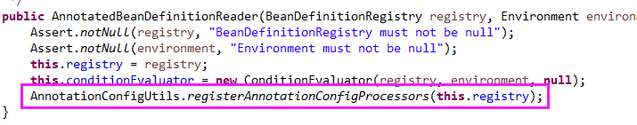
ClassPathBeanDefinitionScanner这个类的scan方法中，如下图03：
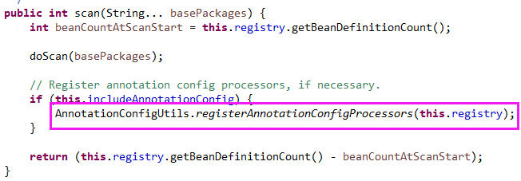
我们发现它们执行的是相同的代码，这不就执行两遍了吗？哈哈，里面做了幂等处理啦。
进到这个方法里会发现注册了好几个bean，但是bean工厂处理器的只有一个，如下图04：
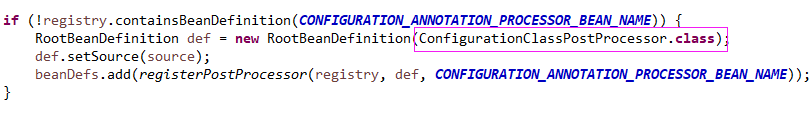
它的bean名称里带了个internal，说明是内部使用的，即“基础设施”的作用，如下图05：
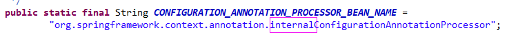
这个类的名称以ConfigurationClass开头，表示是对标有@Configuration注解的类的全权处理。
仔细想一下，让你在Spring家族中选择一个最特殊、最常见的注解，任何人都会选择@Configuration这个注解。
再仔细体会下，这个注解其实具有类似“配置”和“管理”方面的功能。可以说整个Spring都是围绕着它构建起来的。
OK，现在即将迎来本文的核心内容，打起精神来。照例还是侧重整体过程，弱化具体实现细节。
第一，取出已经注册的bean定义，其实就是主类自己这个光杆司令。
第二，判断它是否需要被处理，满足的条件是：
1）标有@Configuration注解
2）标有@Component注解
3）标有@ComponentScan注解
4）标有@Import注解
5）标有@ImportResource注解
6）含有@Bean方法
只要这六个条件满足其一，就需要被处理。
由于SpringBoot的主类上标有@SpringBootApplication注解，所以上述第1条就已满足了。
因此主类需要被处理，这不废话嘛，目前只注册了它自己，必须的被处理啊。
编程新说注：每一个符合条件的类，都可以认为是一个源（Source，即源泉），它的作用就是向容器中贡献bean定义。
第三，如果类上标有@Component注解，就去处理它的静态内部（嵌套）类，如下图06：

这其实已经是递归了，所以处理方式是一样的。
第四，接着处理@PropertySource注解，它可以引入.properties文件，会把文件中的属性值放入到Environment中。如下图07：
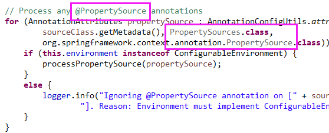
第五，接着处理@ComponentScan注解，它会扫描指定的jar包，并从中获取bean定义，如下图08：
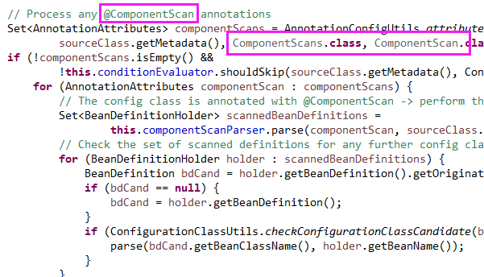
第六，然后再处理@Import注解，如下图09：
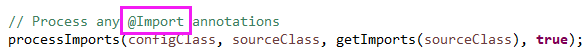
该注解共可以引入三类内容：
1）另一个普通类，但是当作@Configuration类
2）ImportSelector接口的实现类
3）ImportBeanDefinitionRegistrar接口的实现类
其中第2、3是通过实现接口，自己写代码来注册bean定义，超级灵活，随意掌控。
编程新说注：这种方式的一般典型用法是，在实现第三方框架和Spring框架整合时使用。
请看下代码，如下图10：
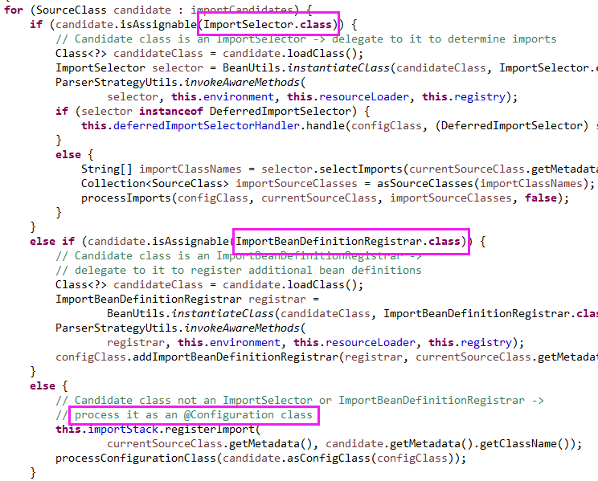
第七，然后处理@ImportResource注解，它用于引入.xml文件，可以使xml和注解两种方式混合使用，如下图11：
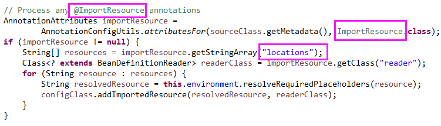
第八，然后再处理类中的@Bean方法，如下图1213：
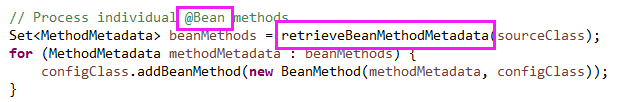
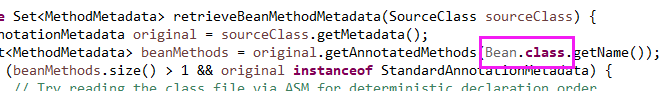
第九，然后再处理接口里面的默认方法，且方法上有@Bean注解的，如下图1415：
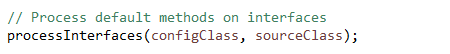
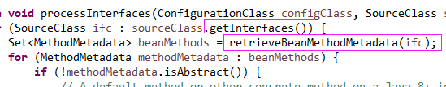
第十，最后再处理父类，如下图16：
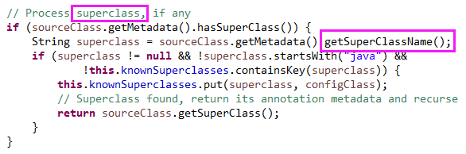
因为每个@Configuration类除了自身是源之外，还可以向容器贡献其它的源，所以总体是递归进行的。
在进行的过程中，做好了防重复处理，所以不会出现重复注册。
以上所有这些其实都是ConfigurationClassPostProcessor这类里面的逻辑。
它不仅仅是一个bean工厂后处理器，还是一个专门用于注册bean定义的后处理器。
这个类在容器启动时会被调用，因此把其它类的bean定义注册到了容器中。
>>> 品Spring系列文章 <<<
品Spring：SpringBoot和Spring到底有没有本质的不同？
品Spring：SpringBoot轻松取胜bean定义注册的“第一阶段”
作者是工作超过10年的码农，现在任架构师。喜欢研究技术，崇尚简单快乐。追求以通俗易懂的语言解说技术，希望所有的读者都能看懂并记住。下面是公众号和知识星球的二维码，欢迎关注！